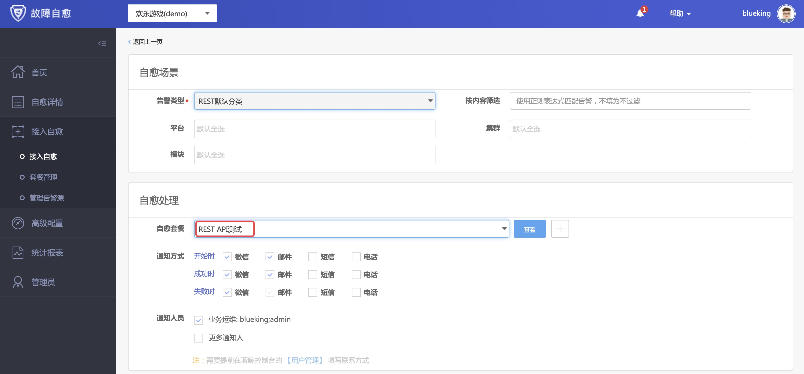

第 3 方监控系统告警自动处理
情景
故障处理是运维的职能之一，人工登录服务器处理告警，存在 2 个问题：故障处理效率低 和 操作疏忽时可能影响生产环境，例如删除文件输入绝对路径时，在根目录和日志目录间误敲空格，导致根目录删除。
前面介绍了 蓝鲸监控、Zabbix 告警的自动处理，接下来通过 “REST API 告警接入故障自愈”这个案例 ，来了解故障自愈如何集成第 3 方监控系统。
前提条件
术语解释
- 自愈套餐 : 告警的处理动作，比如清理日志的作业
- 自愈方案 : 关联 告警 和 处理动作的一个组合
操作步骤
- 启用 REST API(推送)告警源
- 接入自愈方案
- 自愈测试
- 故障自愈的收敛防护
1. 启用 REST API(推送)告警源
第 3 方监控系统调用 REST API(推送)接口，故障自愈收到告警后立即做自动化处理。

首先，启用告警源。
在菜单 [接入自愈] -> [管理告警源]中，启用REST API(推送)。

2. 接入自愈方案
在菜单 [接入自愈] 中，点击 接入自愈 , 告警类型选择 REST默认分类。
点击新建自愈套餐的按钮，准备一个告警的处理动作。

在自愈套餐页面，套餐类型选择作业平台，点击作业名称右侧的加号，新建一个测试的作业模板。

点击新建作业的按钮后，跳转至作业平台，在菜单 [作业执行] -> [新建作业] 中，新建一个默认的作业即可。

保存REST API测试的自愈套餐后，自动回到接入自愈的页面，保存自愈方案即可。

回到接入自愈列表，在列表中可以找到刚刚创建的自愈方案。

3. 自愈测试
在 REST API(推送)的告警源管理页面，复制调用实例。

将示例中的 IP 替换给该业务下任意一个 IP，然后贴到终端下执行。

如果多次调试，请保证
source_id唯一（重复会丢弃），source_time和服务器时间一致（过长会丢弃）。
在自愈详情页面可以找到自愈记录。

点开状态按钮，可以查看详情。

点击详情中的作业执行 ID，可查看执行的作业。

至此，一次模拟告警的故障自愈演示完毕。
REST API(推动) 的场景在于，如果你使用的监控系统故障自愈默认未集成，则可以通过回调 REST API 的方式，将告警推送至故障自愈，故障自愈执行对应的处理动作，完成告警的自动处理。
4. 故障自愈的收敛防护
故障自动处理是把双刃剑，需要考虑因为网络波动等场景导致的假告警，这时可以用到故障自愈的异常防御需审批功能。
在菜单 高级配置 -> 告警收敛，新建 1 条收敛规则。
告警类型选择REST默认分类，条件为相同业务，触发频次为5分钟2次以上，收敛方式为异常防御需审批，备注填写疑似网络波动，请审批。

执行 4 次告警推送后，可以看到多条告警收敛为 1 条告警，需要运维审批。


故障自愈，在安全的前提下完成告警的自动化处理。
收敛审批是通过企业微信实现，请参考 微信审批接入流程。